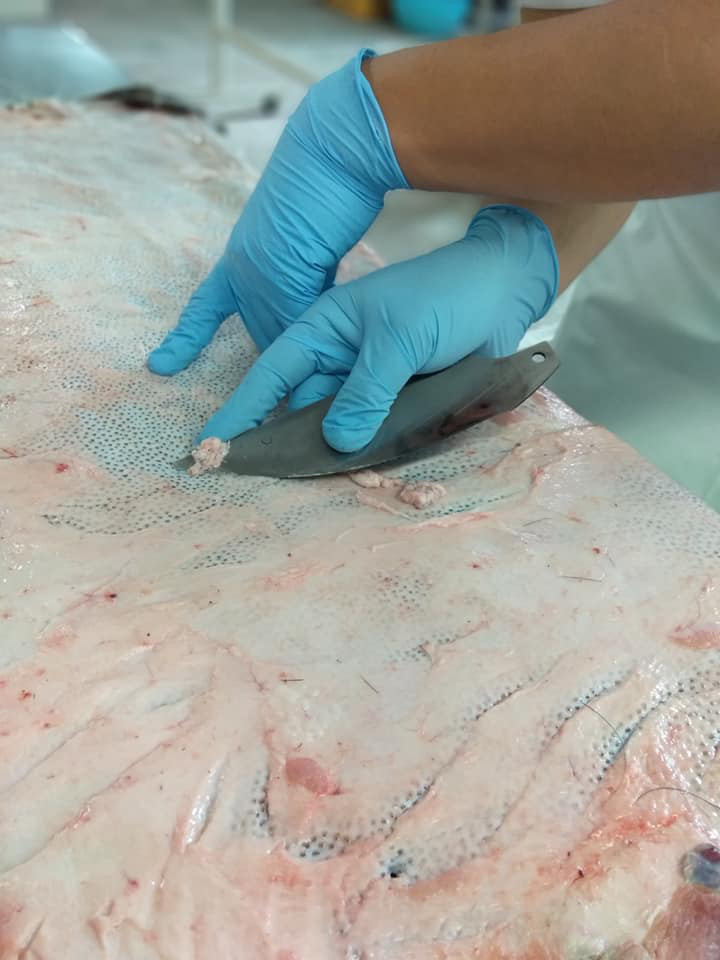
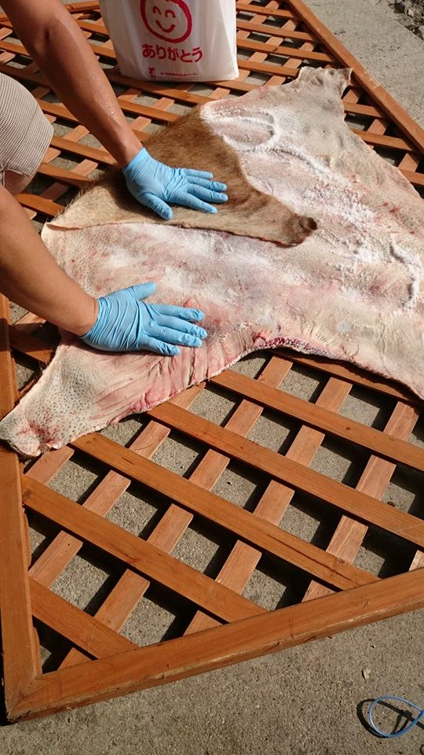

獣皮活用・講座
WILD GAME HIDE UTILIZATION


獣皮を、地域の資源として活かす。
イノシシなどの野生獣の皮を、皮革素材として活用するための 下処理方法を学ぶ実技講座です。
愛媛県今治市・大三島にある「しまなみイノシシ活用隊」の 解体所で、実際に皮に触れながら、獣脂・獣肉の除去方法を学びます。
＝ 講座について
なめし加工を依頼する前に必要となる、獣皮の下処理について学びます。 ナイフや皮剥ぎ包丁などの刃物を使用し、皮に残った脂や肉を取り除く工程を 実技指導のもとで行います。
本講座では、解体作業によって本体から剥がされた状態の皮を使用します。 内臓出しなど、解体の最初の工程から行う講座ではありません。
＝ 講座内容
01 獣脂・獣肉の除去方法
ナイフや皮剥ぎ包丁などを使い、獣皮に残った脂や肉を取り除く方法を 実際に手を動かしながら学びます。
02 獣皮活用に関する講義（追加オプション）
ご希望に応じて、獣皮革の活用事例や販売事例、在庫管理、 活用に向き・不向きな皮革の見分け方、損益分岐点の考え方なども ご案内します。
＝ 開催について
開催日時は固定していません。 ご希望や参加人数などをお伺いしたうえで、日程を調整いたします。
講座の内容や追加オプション、費用などの詳細についても、 お問い合わせの際にご案内します。
＝ 講師
重信 幹広
しまなみイノシシ活用隊 皮革担当
大三島・伯方島で捕獲されたイノシシの皮を活用し、 地域資源としての獣皮革の可能性を広げる活動に携わっています。
＝ 開催場所
しまなみイノシシ活用隊 解体所
愛媛県今治市 大三島
＝ お問い合わせ
講座の内容、開催日程、参加についてのご相談は、 下記までお気軽にお問い合わせください。
代表：しまなみイノシシ活用隊 皮革担当／重信 幹広
Tel：090-1856-0965
Mail：info@jishac.site